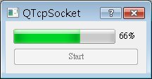

QTcpSocket
提供了針對TCP（Transmission Control
Protocol）的介面，可以讓您進行以TCP為基礎的通訊協定、資料傳輸，像是SMTP、POP3等，QTcpSocket本身設計為非同步的
（Asynchronized）操作，各個操作階段會發出相關的Signal，像是connected()表示連線建立、bytesWritten()表
示傳輸多少資料、error()帶有網路操作過程中的相關錯誤訊息，QTcpSocket繼承自QIODevice，所以您可以搭配 QTextStream 或 QDataStream 來使用。
這篇文件與 QTcpServer 將製作一個簡單的範例，可以讓您進行檔案選取並透過網路傳送，這邊將製作的是客戶端的程式，首先看到定義的部份：
#ifndef CLIENTDIALOG_H
#define CLIENTDIALOG_H
#include <QDialog>
#include <QHostAddress>
#include <QTcpSocket>
class QProgressBar;
class QPushButton;
class QFile;
class ClientDialog : public QDialog {
Q_OBJECT
public:
ClientDialog(QWidget *parent = 0);
void setHostAddressAndPort(QString hostAddress, quint16 port);
void closeConnection();
public slots:
void start();
void startTransfer();
void updateProgress(qint64 numBytes);
void displayError(QAbstractSocket::SocketError socketError);
private:
QProgressBar *progressBar;
QPushButton *startBtn;
QHostAddress hostAddress;
quint16 hostPort;
QTcpSocket client;
QFile *file;
};
#endif
程式中將會有一個按鈕與進度列，按下按鈕後將可以選擇檔案並進行網路連線，這是在start()中會定義，startTransfer()則實際進行資料
傳輸，updateProgress()負責更新進度列狀態，若有相關錯誤訊息，則會由displayError()來顯示。
實作部份如下：
#include <QApplication>
#include <QProgressBar>
#include <QPushButton>
#include <QVBoxLayout>
#include <QFileDialog>
#include <QMessageBox>
#include <iostream>
using namespace std;
#include "ClientDialog.h"
ClientDialog::ClientDialog(QWidget *parent) : QDialog(parent) {
progressBar = new QProgressBar;
progressBar->setValue(0);
startBtn = new QPushButton("Start");
QVBoxLayout *layout = new QVBoxLayout;
layout->addWidget(progressBar);
layout->addWidget(startBtn);
this->setLayout(layout);
connect(startBtn, SIGNAL(clicked()), this, SLOT(start()));
connect(&client, SIGNAL(connected()), this, SLOT(startTransfer()));
connect(&client, SIGNAL(bytesWritten(qint64)),
this, SLOT(updateProgress(qint64)));
connect(&client, SIGNAL(error(QAbstractSocket::SocketError)),
this, SLOT(displayError(QAbstractSocket::SocketError)));
}
void ClientDialog::setHostAddressAndPort(QString address, quint16 port) {
hostAddress.setAddress(address);
this->hostPort = port;
}
void ClientDialog::start() {
QString fileName = QFileDialog::getOpenFileName(
this, "Open File", "F:\\", "All Files (*.*)");
if(fileName == NULL) {
return;
}
file = new QFile(fileName);
startBtn->setEnabled(false);
client.connectToHost(hostAddress, hostPort);
QApplication::setOverrideCursor(Qt::WaitCursor);
}
void ClientDialog::startTransfer() {
if (!file->open(QIODevice::ReadOnly)) {
cerr << "Unable to read the file" << endl;
delete file;
file = 0;
return;
}
client.write(file->readAll());
}
void ClientDialog::updateProgress(qint64 numBytes) {
int written = progressBar->value() + (int)numBytes;
progressBar->setMaximum(file->size());
progressBar->setValue(written);
if(progressBar->value() == progressBar->maximum()) {
closeConnection();
}
}
void ClientDialog::closeConnection() {
client.close();
file->close();
delete file;
file = 0;
progressBar->reset();
startBtn->setEnabled(true);
QApplication::restoreOverrideCursor();
}
void ClientDialog::displayError(QAbstractSocket::SocketError socketError) {
QMessageBox::information(this, "Network error",
"The following error occurred: " + client.errorString());
closeConnection();
}
QTcpSocket的connected()是在連線成功時發出，此時連接startTransfer()進行檔案讀取與傳
送，每送出一筆資料就會發出bytesWritten()，並帶有送出的資料長度訊息，這個訊息可用以更新進度列，當進度達百分之百之後，關閉連結。
連線過程中若有錯誤發生，會發出error()，其中錯誤若為QTcpSocket::RemoteHostClosedError，則表示遠端中斷連
線，由於在這個簡單範例中，檔案傳輸完成後，客戶端會主動中斷連線，所以QTcpSocket::RemoteHostClosedError在 QTcpServer 中的範例，就作為判斷檔案傳送是否完成之用。
您可以如下使用這個ClientDialog：
ClientDialog *client = new ClientDialog;
client->setHostAddressAndPort("127.0.0.1", 9393);
client->setWindowTitle("QTcpSocket");
client->show();
下圖為執行時的參考畫面：

|
|